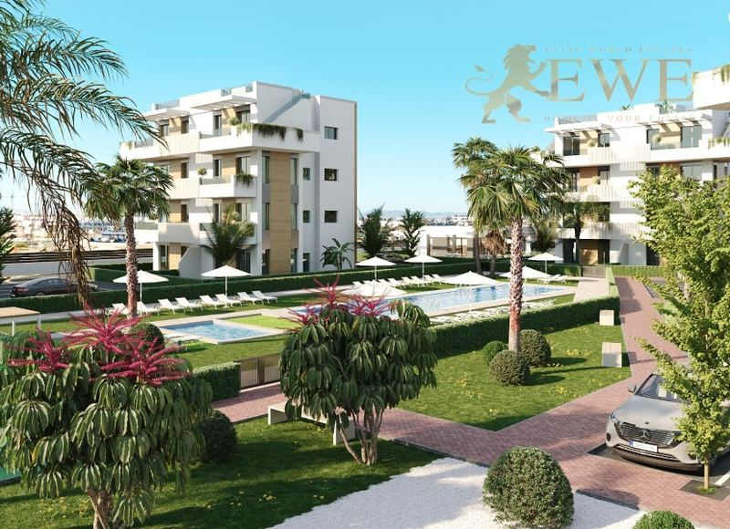
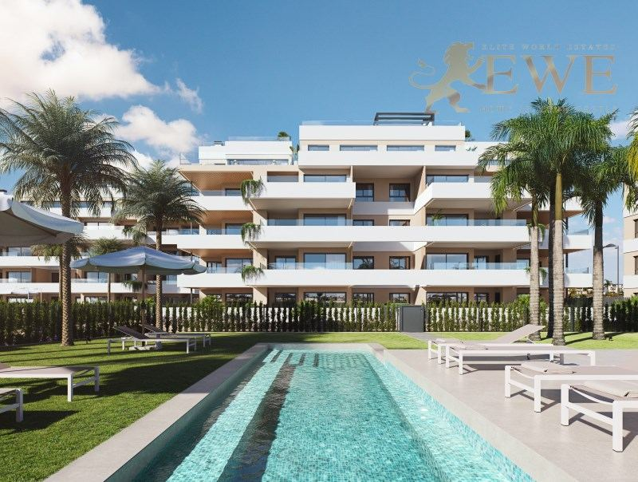
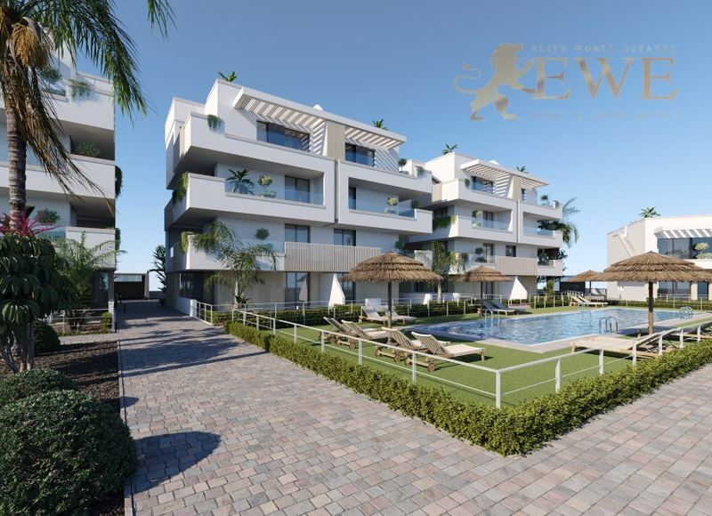
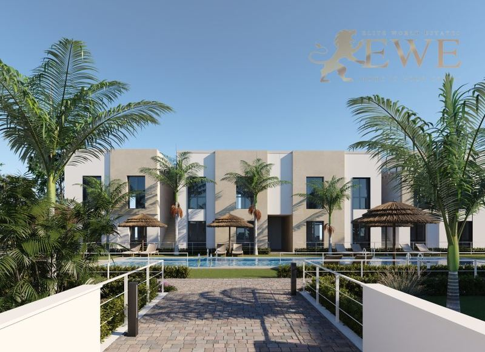
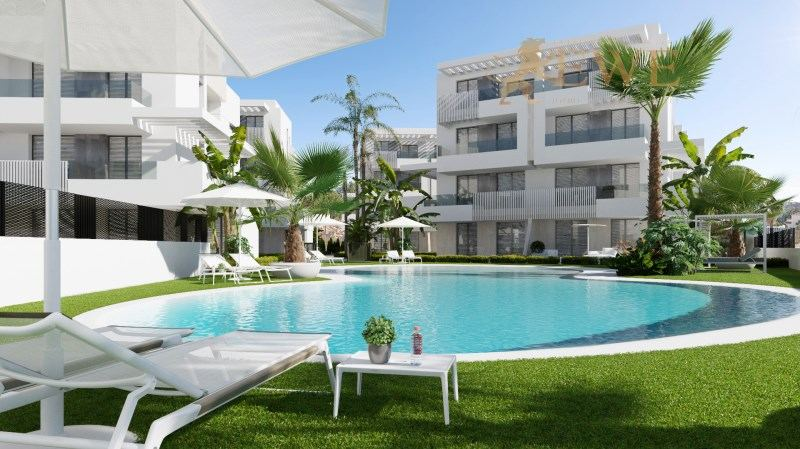
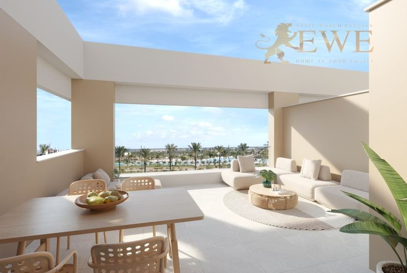
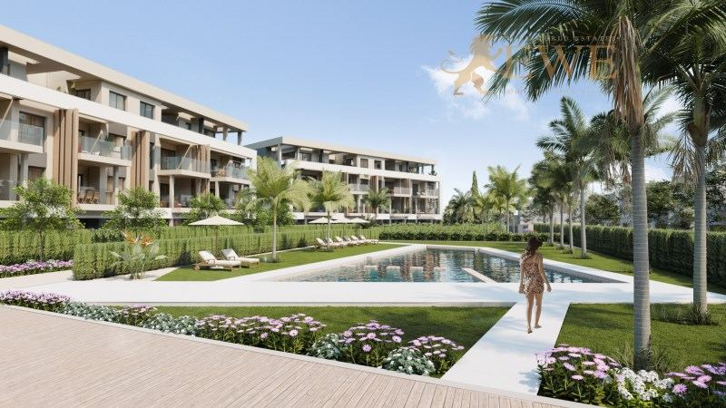
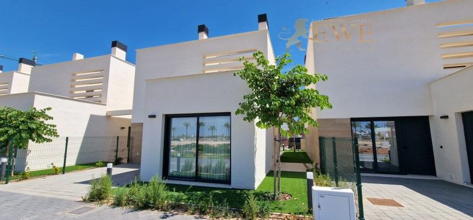
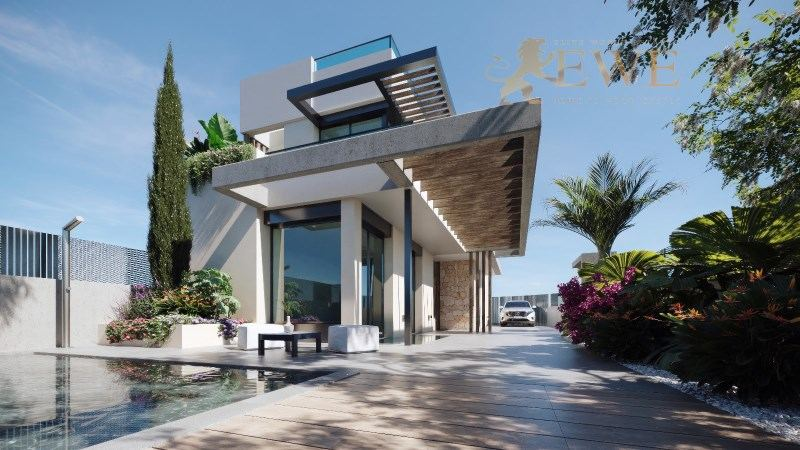

Costa Cálida · Murcia
Property for sale in Torre-Pacheco
Homes around the swimming lagoon of Santa Rosalía Lake & Life Resort, and villas with a private pool in Roldán and El Alba, a few minutes from the Mar Menor. Here are the properties we sell in Torre-Pacheco today, with a short guide to the areas and what buying really costs.
- 16properties for sale in Torre-Pacheco
- from €238,000for a bungalow
- about 25 minto Región de Murcia airport
- about 5 kmfrom Santa Rosalía to the Mar Menor
For sale now
Properties for sale in Torre-Pacheco
Apartments, penthouses, bungalows and villas in gated resorts, many with a private pool or a view of the lagoon. Prices are as listed today; ask us for the current availability.
 EWE3602
EWE3602Torre-Pacheco
Cozy bungalow in El Alba Residential in the city of Roldán
€238,000
3 bedrooms · 2 bathrooms · 80 m²Ref. EWE3602
 EWE3600
EWE3600Torre-Pacheco
New villa with pool villa in Roldán
€274,900
2 bedrooms · 2 bathroomsRef. EWE3600
 EWE3828
EWE3828Torre-Pacheco
Single-Storey Villa with Private Pool in Torre-Pacheco
€279,900
3 bedrooms · 2 bathrooms · 84 m²Ref. EWE3828

EWE3758Torre-Pacheco
Fully Furnished Investment Apartments in Santa Rosalía Lake & Life Resort
€289,900
2 bedrooms · 2 bathrooms · 73 m²Ref. EWE3758

EWE3703Torre-Pacheco
Modern apartments by the Santa Rosalía lagoon
€303,000
2 bedrooms · 2 bathrooms · 67 m²Ref. EWE3703
 EWE3458
EWE3458Torre-Pacheco
Magnificent semi-detached villa with pool in El Alba Mediterranean Resort
€311,000
2 bedrooms · 2 bathrooms · 60 m²Ref. EWE3458
 EWE3361
EWE3361Torre-Pacheco
Finished villa at the luxury El Alba Mediterranean Resort development
€311,900
2 bedrooms · 2 bathrooms · 75 m²Ref. EWE3361

EWE3742Torre-Pacheco
Exclusive Apartment in Santa Rosalía Lake & Life Resort, Costa Cálida
€315,900
2 bedrooms · 2 bathrooms · 74 m²Ref. EWE3742

EWE3743Torre-Pacheco
Exclusive Bungalow in Santa Rosalía Lake & Life Resort, Costa Cálida
€334,900
2 bedrooms · 2 bathrooms · 74 m²Ref. EWE3743
 EWE3710
EWE3710Torre-Pacheco
Designer Ibiza style villa in Roldán, Costa Cálida
€419,950
3 bedrooms · 3 bathroomsRef. EWE3710

EWE2156Torre-Pacheco
Modern apartment with lake views in Santa Rosalía Lake & Life Resort Murcia
€499,000
3 bedrooms · 2 bathrooms · 98 m²Ref. EWE2156

EWE3195Torre-Pacheco
Elegant penthouse with large terrace in Santa Rosalía
€525,000
2 bedrooms · 2 bathrooms · 77 m²Ref. EWE3195

EWE2406Torre-Pacheco
Stunning penthouse with large sun terrace in Santa Rosalía Lake & Life Resort Murcia
€529,000
3 bedrooms · 2 bathrooms · 90 m²Ref. EWE2406

EWE3331Torre-Pacheco
A finished home at Santa Rosalia Lake and Life Resort.
€565,000
3 bedrooms · 3 bathrooms · 122 m²Ref. EWE3331

EWE3745Torre-Pacheco
Exceptional Villa with Solarium and Private Pool in Santa Rosalía Resort
€659,900
3 bedrooms · 3 bathroomsRef. EWE3745
 EWE3601
EWE3601Torre-Pacheco
An exquisite villa with a large swimming pool at El Alba Mediterranean Resort
€674,500
4 bedrooms · 3 bathrooms · 148 m²Ref. EWE3601
The city
Living in Torre-Pacheco
Torre-Pacheco is a municipality of about 40,000 people in the Campo de Cartagena, in the Region of Murcia, a short drive inland from the Mar Menor. Most of our homes here are in modern gated resorts built for people who want space, sun and a pool, close to the beaches of Los Alcázares.
The best known is Santa Rosalía Lake & Life Resort, about 5 km from the Mar Menor. Its centrepiece is a turquoise swimming lagoon of about 1.6 hectares with white sand beaches and two islands, set in a park of about 12 hectares. Nearby, Roldán and the El Alba residential area offer villas and bungalows with a private pool for less money.
Golf courses, supermarkets and the beaches of Los Alcázares are a few minutes away. Región de Murcia airport is about 25 minutes away by car, and Alicante airport a little over an hour.

Where to buy
The main areas of Torre-Pacheco
Santa Rosalía Lake & Life Resort
A gated resort around a large swimming lagoon with beaches, about 5 km from the Mar Menor. Apartments, penthouses, bungalows and villas.
Roldán
A small town in the municipality, with local shops and new villas and bungalows with a private pool.
El Alba Mediterranean Resort
A residential area with modern villas and bungalows, many with a private pool, close to Roldán.
Torre-Pacheco town
The main town, with shops, markets, schools and health centres, for everyday life all year.
Budget
What it costs to buy in Torre-Pacheco
On top of the price you pay tax and fees. For a new home at €315,900, for example, that is €31,590 VAT and €4,738 stamp duty, plus notary, land registry and legal fees. Taxes on resale homes are different, so always ask us for the exact figure for the home you like.
| New build | 10% VAT (IVA) + 1.5% stamp duty (AJD) |
|---|---|
| Resale home | 7.75% transfer tax (ITP) |
| Notary, registry, lawyer | about 1.5–2.5% of the price |
| Every year | IBI property tax and community fees, which depend on the home |
Questions
Buying property in Torre-Pacheco: questions and answers
How much does a property cost in Torre-Pacheco?
Our homes in Torre-Pacheco start at €238,000 today. Apartments in Santa Rosalía cost from about €290,000, penthouses from about €525,000, and villas with a private pool from about €275,000 in Roldán up to €675,000 in El Alba.
What is Santa Rosalía Lake & Life Resort?
It is a gated residential resort in Torre-Pacheco built around a large swimming lagoon with white sand beaches. The lagoon and facilities are for residents and their guests and are paid for through the community fees. Read our guide to Santa Rosalía.
How far is Torre-Pacheco from the beach and the airport?
The beaches of Los Alcázares on the Mar Menor are about 5 to 10 minutes away by car. Región de Murcia airport is about 25 minutes away.
What costs are there on top of the price?
In the Region of Murcia you pay 10% VAT and 1.5% stamp duty on a new build, and 7.75% transfer tax on a resale home. Notary, land registry and legal fees add about 1.5–2.5%.
Can foreigners buy property in Torre-Pacheco?
Yes. Anyone can buy property in Spain. You need a Spanish NIE tax number and usually a Spanish bank account, and we help you with both. See our guide to the NIE number.


Looking for a home in Torre-Pacheco?
Tell us your budget and what you need. We reply within one working day, in English, German, Spanish or Polish.